抄底亏惨了...
OCR 识别提示（待核对）
- OCR 自动识别文字，尚未逐字校对；可能错字、漏字、漏行，数字、姓名、标点及断行也可能有误，请以截图为准。
- 这里只保留 PDF 已截到的正文、留言和作者回复；截图以外的留言不在此存档中。
- 未从截图推断留言总数或回复关系；手机界面文字也可能混入 OCR。
- 低置信标记仅为机器提示，并不表示未标记的文字已经准确。
识别工具：tesseract 5.5.0 · tesseract-ocr/tessdata_best chi_sim。识别器置信度仅用于提示核对，不是文字准确率。
第 1 页 · 原始截图
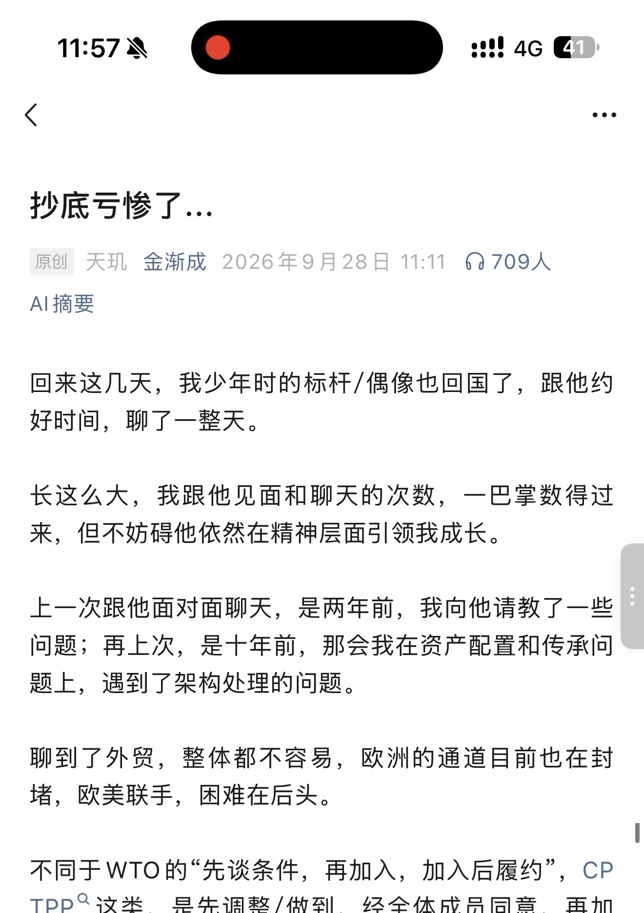
查看本页自动识别文字（OCR待核对） · 18 处低置信度提示
以下为未经逐字核对的自动识别结果，请以上方原图为准。
识别器标记 18 处低置信度，请对照截图核对
这些是识别器的风险提示，并不等于已确认的错误。
- no 人》 :…
- 抄底亏惨了 .…
- 原创天现金渐成 2026 年 9 月 28 日 11:11 人 709 人
- 上一次跟他面对面聊天， 是两年前， 和
- 问题 ; 再上次， 是十年前， 那会我在资产配置和传承问
- 题上， 遇到了架构处理的问题。
- 堵， 欧美联手， 困难在后头。
- |
- 不同于 WTO 的先谈条件， 再加入， 加入后履约，CP
- TPP”“ 这类， 是先调整 /做到， 经全体成员同意， 再加
第 2 页 · 原始截图
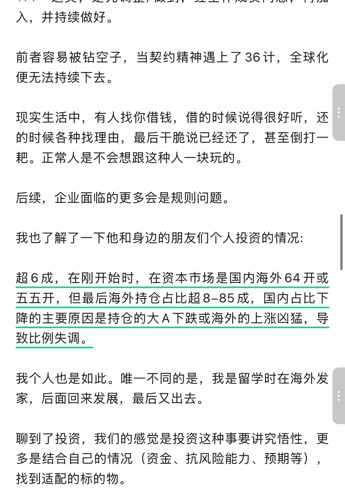
查看本页自动识别文字（OCR待核对） · 14 处低置信度提示
以下为未经逐字核对的自动识别结果，请以上方原图为准。
识别器标记 14 处低置信度，请对照截图核对
这些是识别器的风险提示，并不等于已确认的错误。
- 前者容易被钼空子， 当契约精神遇上了 36 计， 全球化
- 现实生活中， 有人找你借钱， 借的时候说得很好听，，
- 友。 正常人是不会想跟这种人一块玩的。
- 超 6 成， 在刚开始时， 在资本市场是国内海外 64 开或
- 五五开， 但最后海外持仓占比超 8-85 成， 国内占比下
- 降的主要原因是持仓的大 A 下跌或海外的上涨凶猛， 导
- 我个人也是如此。 唯一不同的是， 我是留学时在海外发
- 多是结合自己的情况 《资金、 抗风险能力、 预期等 )，
- 找到适配的标的物。
第 3 页 · 原始截图
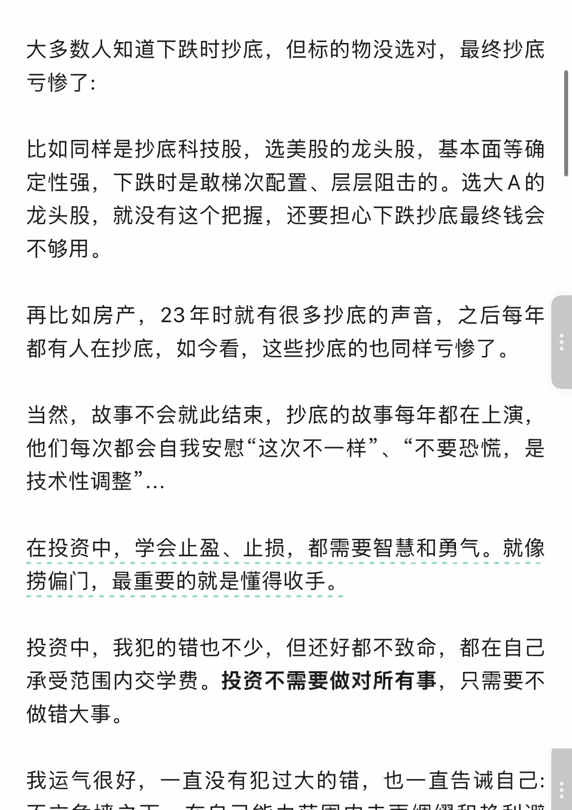
查看本页自动识别文字（OCR待核对） · 11 处低置信度提示
以下为未经逐字核对的自动识别结果，请以上方原图为准。
识别器标记 11 处低置信度，请对照截图核对
这些是识别器的风险提示，并不等于已确认的错误。
- 亏惨了 :
- 定性强， 下跌时是敢梯次配置、 层层阻击的。 选大 A 的
- 再比如房产，23 年时就有很多抄底的声音， 之后每年
- 他们每次都会自我安奈这次不一样 ”、 不要丽慌， 是
- 技术性调整 ….
- 我运气很好， 一直没有犯过大的错， Er:
第 4 页 · 原始截图
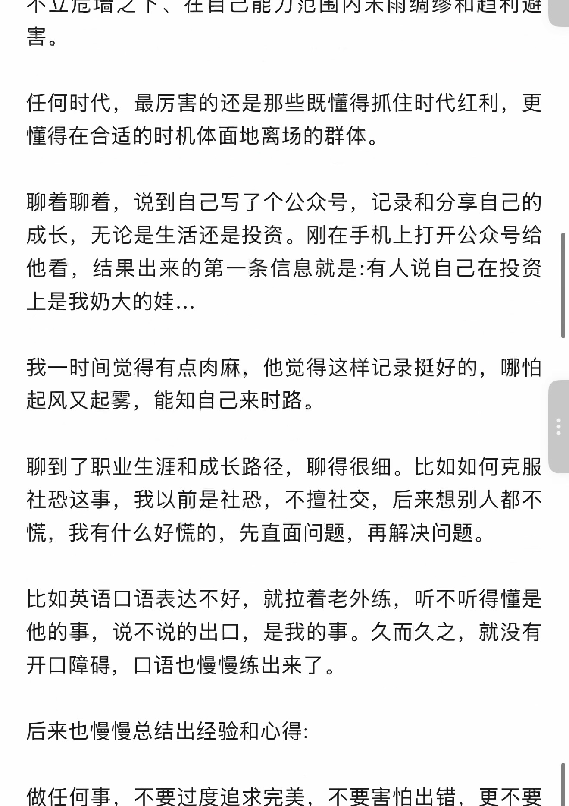
查看本页自动识别文字（OCR待核对） · 21 处低置信度提示
以下为未经逐字核对的自动识别结果，请以上方原图为准。
识别器标记 21 处低置信度，请对照截图核对
这些是识别器的风险提示，并不等于已确认的错误。
- 不立危墙之下、 在自己能力范围内未雨绸缪和趋利中
- 任何时代， 最厉害的还是那些既懂得抓住时代红利， 更
- 成长， 无论是生活还是投资。 刚在手机上打开公众号给
- 上是我奶大的娃 …
- 我一时间觉得有点肉麻， 他觉得这样记录挺好的， 哪怕
- 起风又起雾， 能知自己来时路。
- 社恐这事， 我以前是社棘， 不擅社交， 后来想别人都不
- 慌， 我有什么好慌的， 先直面问题， 再解决问题。
- 比如英语口语表达不好， 就拉着老外练， 听不听得懂是
- 他的事， 说不说的出口， 是我的事。 久而久之， 就没有
- 做任何事， 不要过度追求完美， 不要害怕出错， 更不要
第 5 页 · 原始截图
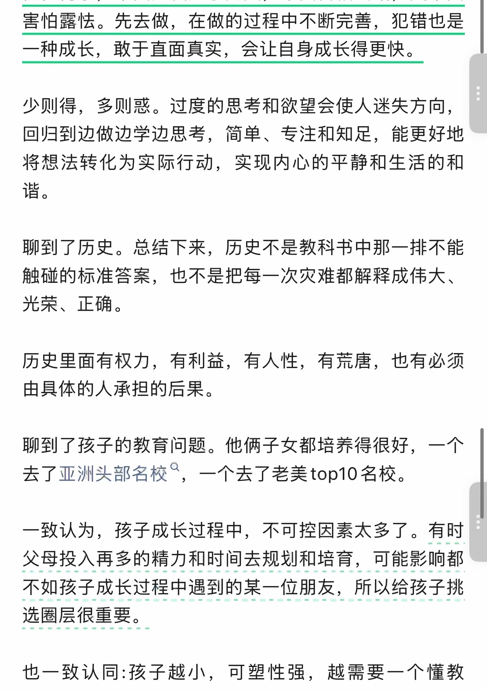
查看本页自动识别文字（OCR待核对） · 12 处低置信度提示
以下为未经逐字核对的自动识别结果，请以上方原图为准。
识别器标记 12 处低置信度，请对照截图核对
这些是识别器的风险提示，并不等于已确认的错误。
- 害怕露性。 先去做， 在做的过程中不断完善， 犯错也是
- 少则得， 多则惑。 过度的思考和欲望会使人迷失方向，
- 回归到边做边学边思考， 简单、 专注和知足， 能更好地
- 聊到了历史。 总结下来， 历史不是教科书中那一排不能
- 历史里面有权力， 有利益， 有人性， 有荒唐， 也有必须
- 聊到了孩子的教育问题。 他俩子女都培养得很好， 一个
- 去了亚洲头部名校 ”， 一个去了老美 top10 名校。
- 一致认为， 孩子成长过程中， 不可控因素太多了。 有时
第 6 页 · 原始截图
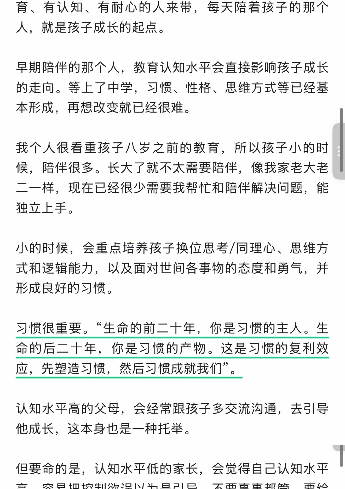
查看本页自动识别文字（OCR待核对） · 11 处低置信度提示
以下为未经逐字核对的自动识别结果，请以上方原图为准。
识别器标记 11 处低置信度，请对照截图核对
这些是识别器的风险提示，并不等于已确认的错误。
- 育、 有认知、 有耐心的人来带， 每天陪着孩子的那个
- 早期陪伴的那个人， 教育认知水平会直接影响孩子成长
- 候， 陪伴很多。 长大了就不太需要陪伴， 像我家老大老
- 小的时候， 会重点培养孩子换位思考 / 同理心、 思维方
- 式和逻辑能力， 以及面对世间各事物的态度和勇气， 并
- 习惯很重要。“ 生命的前二十年， 你是习惯的主人。 生
- 命的后二十年， 你是习惯的产物。 这是习惯的复利效
- 认知水平高的父母， 会经常跟孩子多交流沟通， 去引导
- 但要命的是， 认知水平低的家长， 党]
第 7 页 · 原始截图
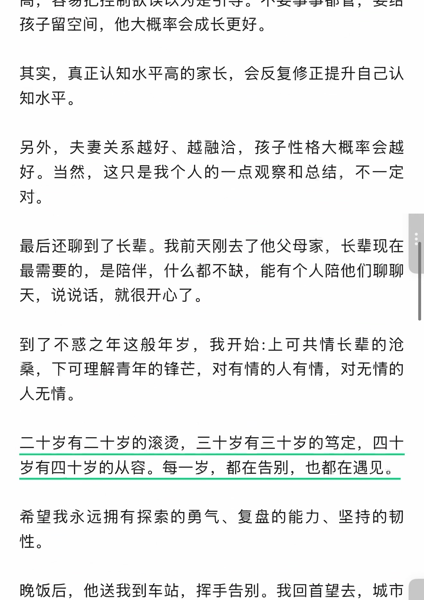
查看本页自动识别文字（OCR待核对） · 24 处低置信度提示
以下为未经逐字核对的自动识别结果，请以上方原图为准。
识别器标记 24 处低置信度，请对照截图核对
这些是识别器的风险提示，并不等于已确认的错误。
- 高， 容易把控制欲误以为是引导。 不要事事都管， 要给
- 另外， 夫妻关系越好、 越融洽， 孩子性格大概率会越
- 最后还聊到了长辈。 我前天刚去了他父母家， 长辈现在
- 最需要的， 是陪伴， 什么都不缺， 能有个人陪他们聊聊
- 到了不惑之年这般年岁， 我开始 :上可共情长辈的沧
- 桑， 下可理解青年的锋芒， 对有情的人有情， 对无情的
- 二十岁有二十岁的滚烫， 三十岁有三十岁的笃定， 四十
- 岁有四十岁的从容。 每一光， 都在告别， 也都在遇见。
- 希望我永远拥有探索的勇气、 复盘的能力、 坚持的韦
- 晚饭后， 他送我到车站， 挥手告别。 我回首望去， 城市
第 8 页 · 原始截图
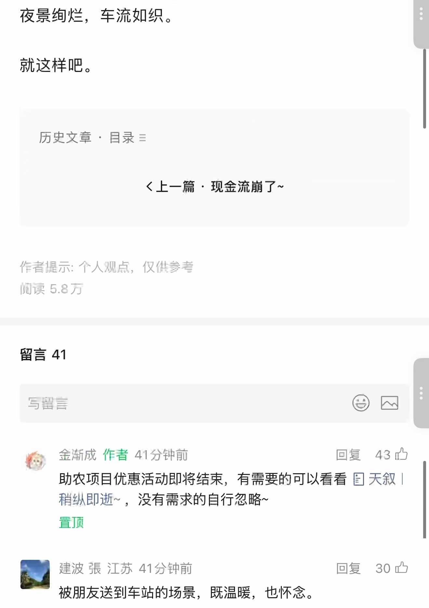
查看本页自动识别文字（OCR待核对） · 27 处低置信度提示
以下为未经逐字核对的自动识别结果，请以上方原图为准。
识别器标记 27 处低置信度，请对照截图核对
这些是识别器的风险提示，并不等于已确认的错误。
- 历史文章， 目录 =
- 《上一篇现金流贿了 ~
- 作者提示 : 个人上鸯点， 仪供参考
- 阅诅 5.8 万
- 写攻言人 DE
- -人金渐成作者 41 分钟前回复 43 四
- 助农项目优惠活动即将结束， 有需要的可以看看图天叙 |
- 稍纵即逝 ~， 没有需求的自行忽略 ~
- 置顶
- 是上“”y 才回复 ”30 办
- 被朋友送到车站的场景， 既温暖， 也怀念。
第 9 页 · 原始截图
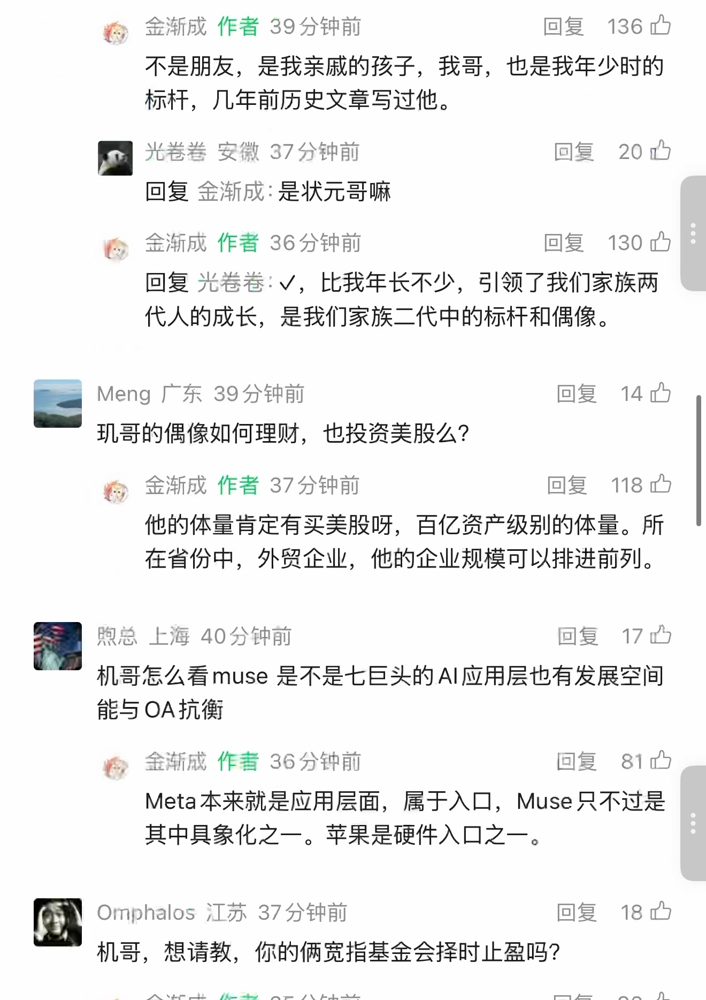
查看本页自动识别文字（OCR待核对） · 57 处低置信度提示
以下为未经逐字核对的自动识别结果，请以上方原图为准。
识别器标记 57 处低置信度，请对照截图核对
这些是识别器的风险提示，并不等于已确认的错误。
- 稚， 金渐成作者 39 分钟前回复 136 让
- 不是朋友， 是我亲戚的孩子， 我哥， 也是我年少时的
- 标杆， 几年前历史文章写过他。
- 轿关莽郑安徽 37 分钟前回复 ”20 办
- 回复金渐成 :是状元哥嘛
- 伶， 金渐成作者 36 分钟前回复 130 办
- 回复光卷卷 : V， 比我年长不少， 引领了我们家族两
- Meng 广东 39 分钟前回复太日
- 崇， 金渐成作者 37 分钟前回复之 mw
- 他的体量肯定有买美股呀， 百亿资产级别的体量。 所
- 风总上海 40 分钟前回复习忆
- 能与 OA 抗衡
- 稚， 金渐成作者 36 分钟前回复号
- Meta 本来就是应用层面， 属于入口，Muse 只不过是
- 其中具象化之一。 苹果是硬件入口之一。
- Omphalos 江苏 37 分钟前回复 ”18 只
- 机哥， 想请教， 你的俩宽指基金会择时止僵吗 ?
第 10 页 · 原始截图
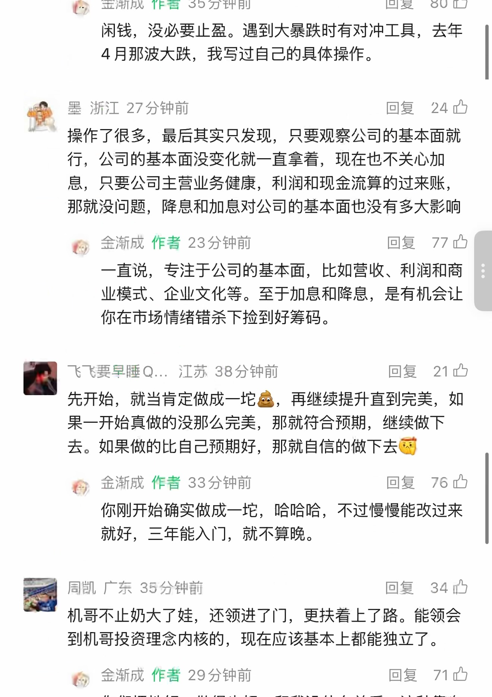
查看本页自动识别文字（OCR待核对） · 55 处低置信度提示
以下为未经逐字核对的自动识别结果，请以上方原图为准。
识别器标记 55 处低置信度，请对照截图核对
这些是识别器的风险提示，并不等于已确认的错误。
- 多 “全渐成作者 35 分钟前回复 80 办
- 闲钱， 没必要止到。 遇到大暴跌时有对冲工具， 去年
- 4 月那波大跌， 我写过自己的具体操作。
- ” 墨浙江 27 分钟前回复 ”24 已
- 操作了很多， 最后其实只发现， 只要观察公司的基本面就
- 息， 只要公司主营业务健康， 利润和现金流算的过来账，
- 全 ”全渐成作者 23 分钟前回复 77 办
- 一直说， 专注于公司的基本面， 比如营收、 利润和商
- 你在市场情绪错杀下捡到好筹码。
- 飞飞要早睡 Q..， 江苏 38 分钟前回复 ”21 已
- 先开始， 就当肯定做成一坨感， 再继续提升直到完美， 如
- 去。 如果做的比自己预期好， 那就自信的做下去夺
- 他 ” 金渐成作者 33 分钟前回复 76 四
- 你刚开始确实做成一地， 哈哈哈， 不过慢慢能改过来
- 周凯广东 35 分钟前回复 ”34 旋
- 机哥不止奶大了娃， 还领进了门， 更扶着上了路。 能领会
- 到机哥投资理念内核的， 现在应该基本上都能独立了。
- 伶， 金渐成作者 29 分钟前回复 “71 办
第 11 页 · 原始截图
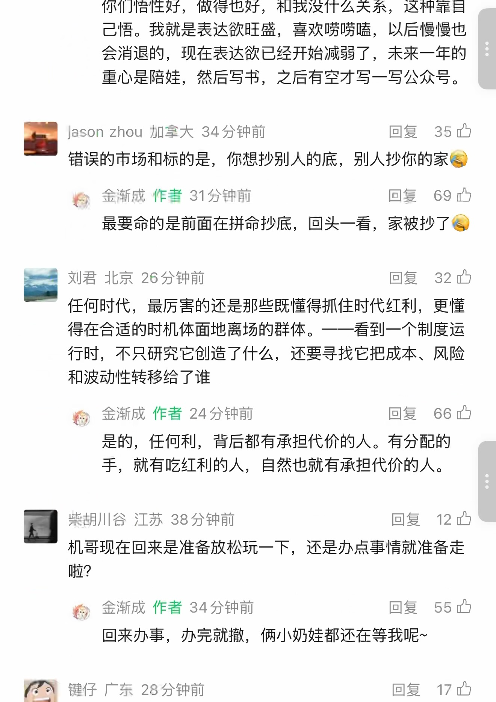
查看本页自动识别文字（OCR待核对） · 52 处低置信度提示
以下为未经逐字核对的自动识别结果，请以上方原图为准。
识别器标记 52 处低置信度，请对照截图核对
这些是识别器的风险提示，并不等于已确认的错误。
- 你们悟性好， 做得也好， 和我没什么关系， 这种靠自
- 己悟。 我就是表达欲旺盛， 喜欢嘴嘴时， 以后慢慢也
- U
- }, Jason zhou 加拿大 34 分钟前回复 ”35 办
- 错误的市场和标的是， 你想抄别人的底， 别人抄你的家条
- 将金渐成作者 31 分钟前回击 8
- 最要命的是前面在拼命抄底， 回头一看， 家被抄了借
- 一 | 刘君北京 26 分钟前回复 ”32 办
- 任何时代， 最厉害的还是那些婚懂得抓住时代红利， 更懂
- 行时， 不只研究它创造了什么， 还要寻找它把成本、 风险
- 准金渐成作者 24 分钟前回复 ”66 办
- 是的， 任何利， 背后都有承担代价的人。 有分配的
- 手， 就有吃红利的人， 自然也就有承担代价的人。
- 图紫胡川谷江苏 38 分钟前回复 12 四
- 啦 ?
- 稚， 金渐成作者 34 分钟前回复 ”55 办
- 回来办事， 办完就撤， 俩小奶娃都还在等我呢 ~
- 天府凶广东 28 分钟前回复 17 四
第 12 页 · 原始截图
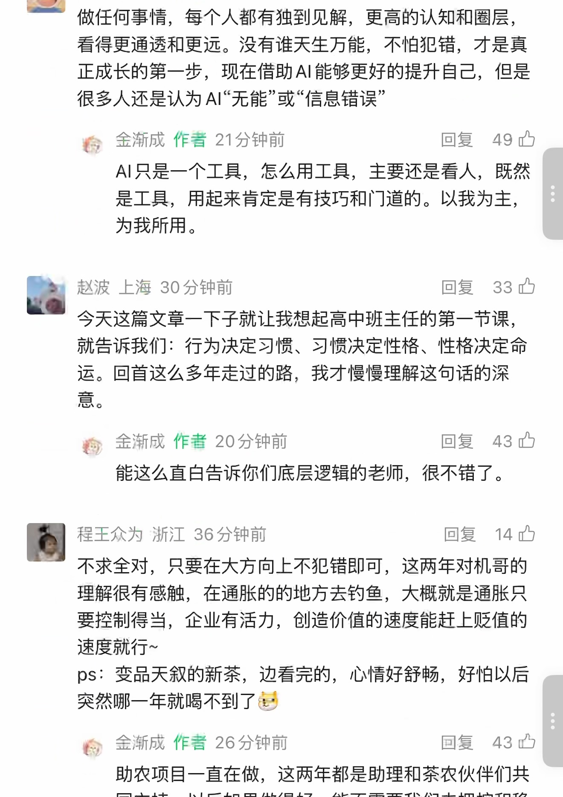
查看本页自动识别文字（OCR待核对） · 41 处低置信度提示
以下为未经逐字核对的自动识别结果，请以上方原图为准。
识别器标记 41 处低置信度，请对照截图核对
这些是识别器的风险提示，并不等于已确认的错误。
- 做任何事情， 每个人都有独到见解， 更高的认知和圈层，
- 看得更通透和更远。 没有谁天生万能， 不怕犯错， 才是真
- 正成长的第一步， 现在借助 Al 能够更好的提升自己， 但是
- 很多人还是认为 Al“ 无能 "或 “信息错误 ”
- 合金渐成作者 21 分钟前回复 ”49 办
- Al 只是一个工具， 怎么用工具， 主要还是看人， 既然
- 哆赵波上海 30 分钟前回复 ”33 办
- 就告诉我们 : 行为决定习惯、 习惯决定性格、 性格决定命
- 运。 回首这么多年走过的路， 我才慢慢理解这句话的深
- 稚， 金渐成作者 20 分钟前回复 43 办
- 能这么直白告诉你们底层逻辑的老师， 很不错了。
- - 程王众为浙江 36 分钟前回复 14 四
- 速度就行 *
- ps: 变品天叙的新茶， 边看完的， 心情好舒畅， 好怕以后
- 突然哪一年就喝不到了反
- 伶， 侈渐成作者 26 分钟前回复 ”43 四
第 13 页 · 原始截图
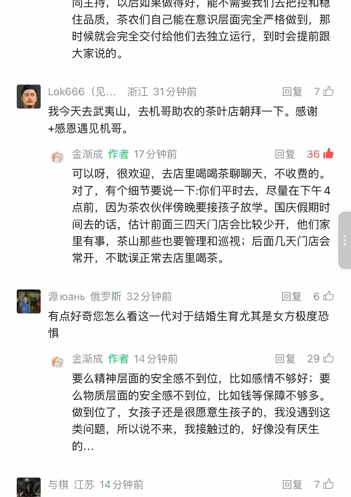
查看本页自动识别文字（OCR待核对） · 41 处低置信度提示
以下为未经逐字核对的自动识别结果，请以上方原图为准。
识别器标记 41 处低置信度，请对照截图核对
这些是识别器的风险提示，并不等于已确认的错误。
- 住品质， 荣农们自己能在意识层面完全严格做到， 那
- 轿 Lok666 ( 见 .， 浙江 31 分钟前回复 7 四
- 我今天去武夷山， 去机哥助农的茶叶店朝拜一下。 感谢
- + 感恩遇见机哥。
- 和从， 金渐成作者 17 分钟前回复 36 由
- 可以呀， 很欢迎， 去店里喝喝茶聊聊天， 不收费的。
- 点前， 因为茶农伙伴傍晚要接孩子放学。 国庆假期时
- 间去的话， 估计前面三四天门店会比较少开， 他们家
- 常开， 不耽误正常去店里喝茶。
- 天回复 6 办
- 有点好奇您怎么看这一代对于结婚生育尤其是女方极度下
- 惧
- 倒金渐成作者 14 分钟前回复 29 只
- 做到位了， 女孩子还是很愿意生孩子的， 我没遇到这
- 的 .…
- 与棋江苏 14 分钟前回复 7 办
第 14 页 · 原始截图
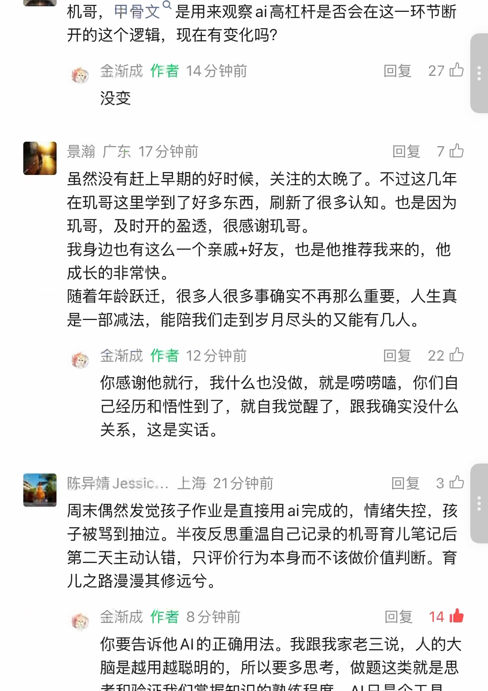
查看本页自动识别文字（OCR待核对） · 47 处低置信度提示
以下为未经逐字核对的自动识别结果，请以上方原图为准。
识别器标记 47 处低置信度，请对照截图核对
这些是识别器的风险提示，并不等于已确认的错误。
- 机哥， 甲骨文 & 是用来观察 ai 高杠杆是否会在这一环节断
- 开的这个逻辑， 现在有变化吗 ?
- 蕉， 金渐成作者 14 分钟前回复 “27 由
- 景瀚广东 17 分钟前回复 7 让
- 虽然没有赶上早期的好时候， 关注的太晚了了。 不过这几年
- 在现哥这里学到了好多东西， 刷新了很多认知。 也是因为
- 现哥， 及时开的盈透， 很感谢现哥。
- 我身边也有这么一个亲戚 + 好友， 也是他推荐我来的， 他
- 是一部减法， 能陪我们走到岁月尽头的又能有几人。
- 区人金渐成作者 12 分钟前回复 ”22 内
- 你感谢他就行， 我什么也没做， 就是噶路叶， 你们自
- 己经历和悟性到了， 就自我觉醒了， 跟我确实没什么
- 陈异婧 Jessic.… 上海 21 分钟前回复 3 中
- 周末偶然发觉孩子作业是直接用 ai 完成的， 情绪失控， 孩
- 子被驾到抽泣。 半夜反思重温自己记录的机哥育儿笔记后
- 第二天主动认错， 只评价行为本身而不该做价值判断。 育
- 发， 全渐成作者 8 分钟前回复太后
- 你要告诉他 Al 的正确用法。 我跟我家老三说， 人的大
- 脑是越用越聪明的， 所以要多思考， 做题这类就是思
第 15 页 · 原始截图
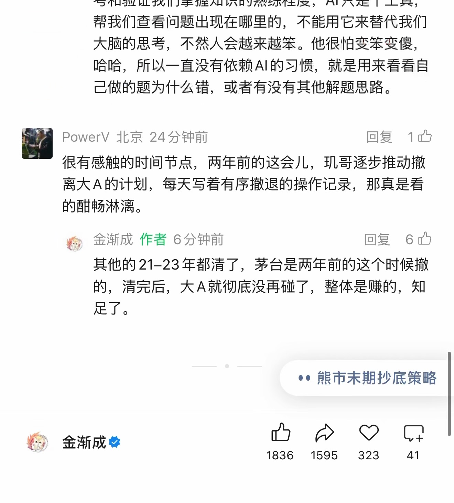
查看本页自动识别文字（OCR待核对） · 40 处低置信度提示
以下为未经逐字核对的自动识别结果，请以上方原图为准。
识别器标记 40 处低置信度，请对照截图核对
这些是识别器的风险提示，并不等于已确认的错误。
- 帮有我们查看问题出现在哪里的， 不能用它来蔡代我们
- 大脑的思考， 不然人会越来越答。 他很怕变笨变傻，
- 己做的题为什么错， 或者有没有其他解题思路。
- - PowerVv 北京 24 分钟前回复 1 让
- 很有感触的时间节点， 两年前的这会儿， 现哥逐步推动撤
- 离大 A 的计划， 每天写着有序撤退的操作记录， 那真是看
- 的柄畅淋漓。
- 痊， 金渐成作者 6 分钟前回复 ”6 让
- 其他的 21-23 年都清了， 茅台是两年前的这个时候撤
- 的， 清完后， 大 A 就彻底没再碰了， 整体是赚的， 知
- *， 熊市未期抄底策略
- 每金渐成必四》 G
- 1836 ”1595 “323 41
按日期浏览全部来源（同日按条目标识排序）
回到页首 ↑